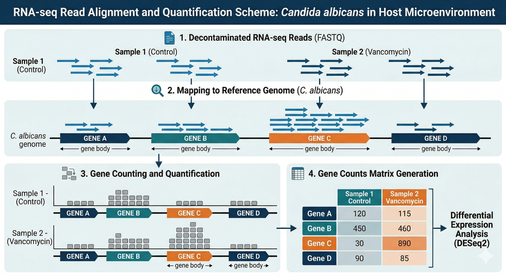

4 Quantificação
Com os dados descontaminados, o próximo passo é identificar a quais genes da Candida albicans essas sequências pertencem e contar quantas vezes cada gene aparece em nossas amostras. Este processo é conhecido como Quantificação.
4.1 1. Alinhamento e Quantificação
O processo de quantificação geralmente envolve duas etapas principais:
- Alinhamento (Mapping): As reads (sequências curtas) são comparadas contra um genoma de referência ou transcriptoma. É como montar um quebra-cabeça onde usamos o genoma como o guia para saber de onde cada peça veio.
- Contagem (Counting): Uma vez que sabemos onde a read se encaixa, verificamos se ela caiu em uma região anotada como um “gene”. O resultado final é uma Matriz de Contagens, onde cada linha é um gene e cada coluna é uma amostra.

4.2 2. O Pipeline nf-core/rnaseq
Para esta etapa, utilizamos o nf-core/rnaseq, um dos pipelines mais robustos e utilizados no mundo para análise de transcriptômica. Ele automatiza desde o controle de qualidade final até a geração das matrizes de expressão.
4.2.1 O Script de Execução
O comando utilizado para quantificar o transcriptoma da Candida albicans foi:
nextflow run nf-core/rnaseq \
--input rnaseq_samplesheet.csv \
--outdir rnaseq_results \
--gtf db/Candida_albicans.GCA000182965v3.62.gtf.gz \
--fasta db/Candida_albicans.GCA000182965v3.dna.toplevel.fa.gz \
-profile docker \
-resume -with-tower4.2.2 Entendendo os Parâmetros:
--fasta: O arquivo de sequência genômica (o “dicionário” de DNA) da Candida.--gtf: O arquivo de anotação, que diz ao software as coordenadas exatas de onde cada gene começa e termina no genoma.-with-tower: Permite o monitoramento remoto da execução via Nextflow Tower.
4.3 3. Fontes de Dados: Ensembl Fungi
Para organismos não-modelos ou patógenos fúngicos, a fonte para genomas e anotações é o Ensembl Fungi.
Para este curso, utilizamos a linhagem de referência SC5314 da Candida albicans. As referências foram adquiridas nos seguintes links:
- Genoma (Fasta): C. albicans DNA Toplevel
- Anotação (GTF): C. albicans Gene Annotation
Diferente do Ensembl principal (focado em vertebrados), o Ensembl Fungi mantém curadoria específica para as complexidades de genomas fúngicos, como estruturas de íntrons compactas e polimorfismos frequentes, garantindo que a nossa quantificação seja a mais precisa possível.
4.3.1 4. Entendendo os Outputs: Do Transcrito ao Gene à Proteína
Antes de abrirmos o R para a Análise de Expressão Diferencial, precisamos alinhar exatamente o que o RNA-Seq mede e como isso se conecta com o resto do curso.
Lembrando o dogma central da biologia molecular (DNA → RNA → Proteína), nosso dado é um “snapshot” do transcriptoma (RNA). O Salmon quantifica transcritos (mRNA), mas nas próximas etapas falaremos constantemente em genes e proteínas. Por que essa mudança de termos?
- Dos Transcritos aos Genes: Um único gene pode gerar múltiplos transcritos (isoformas) por splicing alternativo. Para simplificar a análise, especialmente no genoma mais compacto da Candida albicans, o padrão é somar as contagens das isoformas em um único valor por gene. O pipeline nf-core/rnaseq já fez isso para nós e gerou o arquivo que usaremos:
salmon.merged.gene_counts.tsv. - Dos Genes às Proteínas: No final da nossa análise, usaremos esses genes para mapear vias biológicas e redes de interação (PPI).
Na literatura, é muito comum ler “o gene X está superexpresso” ou “a proteína Y alterou” em estudos de RNA-Seq. Na prática, nós medimos apenas a abundância de transcritos e a usamos como um proxy (uma estimativa) da atividade do gene e da futura tradução proteica. Seguiremos essa mesma convenção prática ao longo do curso.
Com a nossa matriz de contagens pronta e os conceitos alinhados, vamos abrir o R. A grande pergunta agora é: quais genes alteraram sua expressão devido ao tratamento com vancomicina? É o que vamos descobrir a seguir usando o DESeq2.